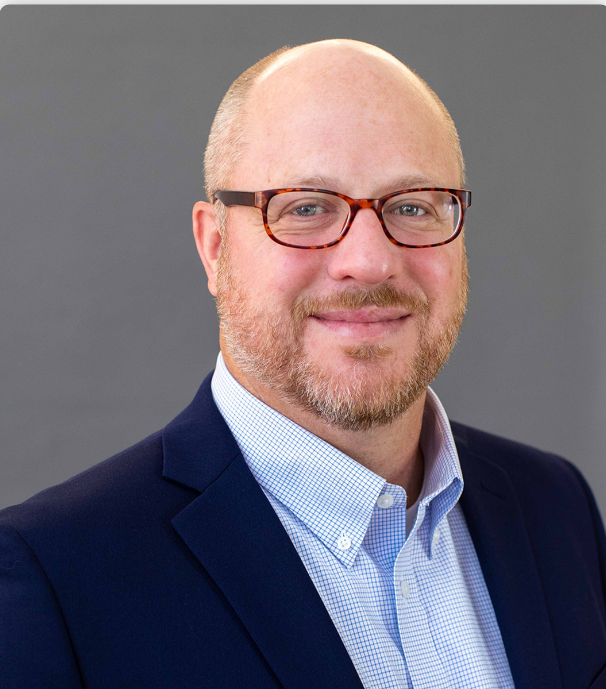
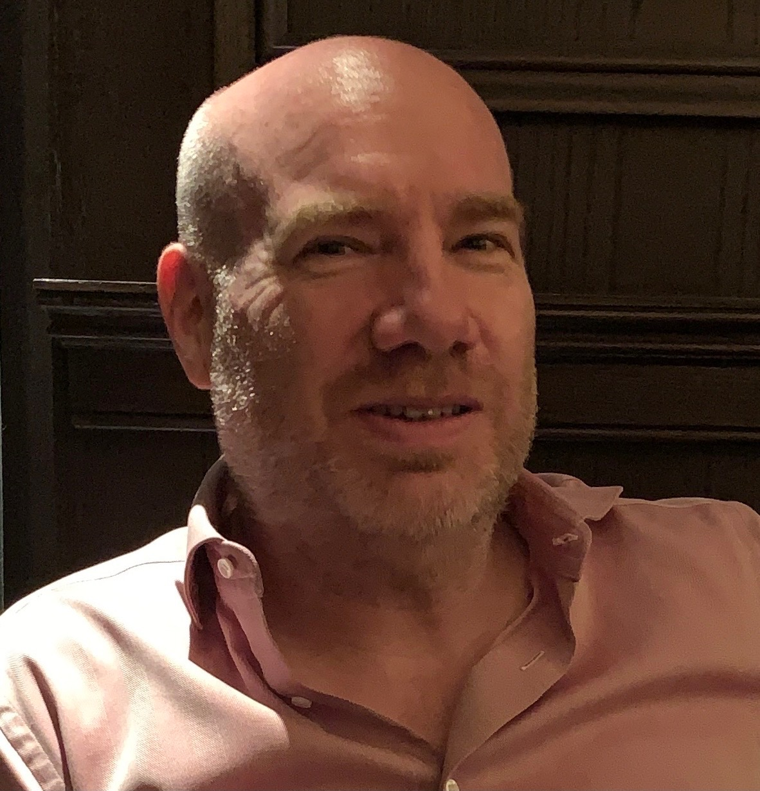
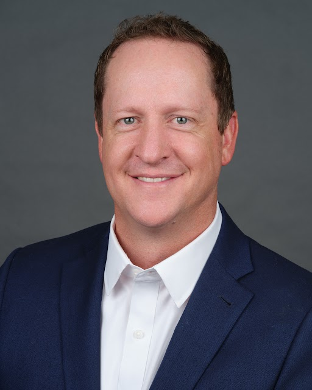

When you hand off investment management, you're trusting three things: the strategy, the execution, and the people. Most outsourced providers show you the first two and hope you don't ask about the third.
Here are the people who'll be making decisions about your clients' portfolios -- their backgrounds, their disciplines, and how they work together as a committee.

Chief Investment Officer
Ryan leads portfolio architecture at QPA -- setting the strategic allocation framework, defining risk budgets, and ensuring every portfolio decision has structure behind it rather than intuition.
His 25 years in institutional investment management span SKY Harbor Capital Management, GE Asset Management, Deutsche Bank, and Barclays Capital. Across those roles, he's managed assets for institutional clients, private wealth platforms, and family offices -- developing the discipline to build strategies designed to hold up across market cycles, not just favorable ones.
Ryan's approach is grounded in two principles: a client's trust has to be earned, and every solution should be designed around the client's best interests. Those principles were shaped early -- watching his father conduct business with integrity, and running his own company through college. They carry into how he structures portfolios today.
B.A. Economics, Brigham Young University • CFA Charterholder
Away from the desk, Ryan spends time with his family and plays tennis on courts around the world.

Chief Quantitative Analyst
Steve leads quantitative research at Quant Portfolio Advisors. He develops and validates the systematic models that drive our strategies, oversees signal integrity, and maintains the research discipline that separates rigorous quantitative work from black-box systems.
Steve's career in quantitative finance spans more than two decades at firms that built modern systematic investing:
Before quant, Steve led engineering at Oven, a New York e-commerce firm where he built the team behind the first e-commerce site for Microsoft and early work for Tiffany & Co., MoMA, and IBM. He then spent several years as VP of Software Development at Netomat, one of the earliest platforms for multimedia authoring and social sharing.
He approaches investing the way a physicist approaches a research problem: data first, structure second, emotion nowhere.
A.B. Physics (cum laude), Columbia University • Graduate studies in mathematical physics, Center for Relativity, University of Texas at Austin (working under Cécile DeWitt-Morette on pin groups)
Outside of work, Steve spends time with his family, walks on the beach in Clearwater, Florida, and makes art.

Chief Wealth Officer
John bridges the gap between investment strategy and real client life. He makes sure the committee's output aligns with the tax situations, planning objectives, estate structures, and specific constraints each advisor brings to the table.
His 20 years of experience span Salt Wealth Partners, Eide Bailly (a Top 20 CPA firm where he helped build the wealth management practice across the Mountain West), and Merrill Lynch. That combination -- Wall Street, Big Four-adjacent tax, and independent wealth -- is unusual, and it's what lets him speak fluently to advisors about both the investment side and the planning side of the relationship.
John's view of the work is direct: "For most of our clients, we manage their entire livelihood. That's a weight I feel every day. It's kept me up at night -- though hopefully, that's what helps our clients sleep."
B.A. Economics, Brigham Young University
Every week, the three of us meet as a working committee. Ryan brings allocation decisions and risk observations. Steve brings model outputs, signal reviews, and research updates. John brings the advisor and client context that keeps the work grounded.
It functions the way an investment committee is supposed to function -- not as a signoff ritual, but as a genuine working body that stress-tests decisions before they reach client portfolios.
For advisors working with us, that means three things:
Institutional research discipline behind every allocation decision
Documented governance you can show clients, prospects, and regulators
Clear ownership of every function, with no gray areas between research, construction, and implementation